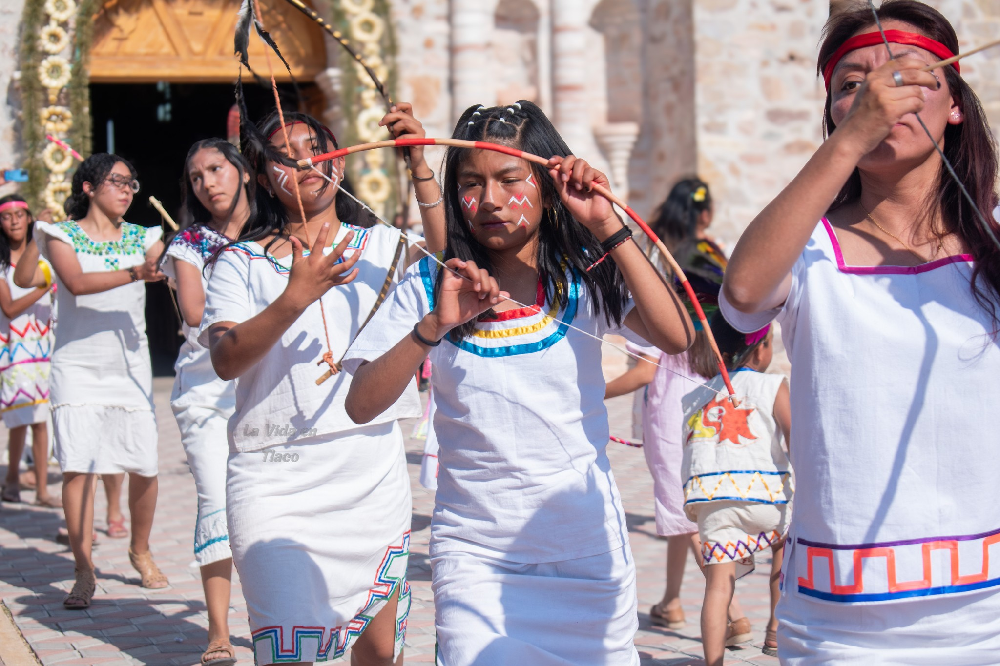
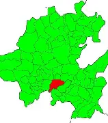

BACHILLERATO INTEGRAL COMUNITARIO DE SAN AGUSTÍN TLACOTEPEC

El pueblo participó activamente en la Revolución Mexicana brindando su apoyo al movimiento zapatista. A lo largo de su historia, la comunidad también ha experimentado diversos procesos de asentamiento y reubicación. Según la tradición oral, el primer establecimiento del municipio se localizó en un paraje conocido como Nucuiti; posteriormente, por razones aún no precisadas, sus habitantes se trasladaron a un sitio denominado Xiquityoo. Tiempo después, la población volvió a reubicarse en el lugar llamado Tixi, donde hasta la actualidad permanecen vestigios y asentamientos humanos. Finalmente, la comunidad se estableció en el territorio que hoy ocupa el municipio de San Agustín Tlacotepec(Mi Municipio,2025.P.3).


Cultura y Tradiciones de San Agustín Tlacotepec Enclavado entre la riqueza cultural de Oaxaca, San Agustín Tlacotepec es un pueblo que ha sabido conservar, con orgullo y dedicación, las tradiciones que le dan identidad y sentido de pertenencia. A través de los años, sus habitantes han mantenido vivas expresiones culturales que representan la memoria, la historia y el espíritu comunitario de la región. La fiesta patronal, celebrada en honor a San Agustín Obispo, se lleva a cabo del 26 al 29 de agosto y constituye el acontecimiento más importante para la comunidad. Durante estos días, las calles del pueblo se llenan de música, color y alegría mediante una serie de actividades religiosas, artísticas y tradicionales que reúnen tanto a habitantes como a visitantes. Entre las manifestaciones culturales más representativas destacan las danzas tradicionales, auténticos símbolos de la herencia de Tlacotepec. Sobresalen las danzas de los mascareros de las bodas, moros y cristianos, la conquista de México, los indios, los diablos y la danza de la comida. Cada una de ellas transmite relatos históricos, creencias y costumbres que han sido preservadas de generación en generación gracias al compromiso de las familias y de toda la comunidad. La celebración también incluye encuentros de bandas filarmónicas y presentaciones de grupos folklóricos, creando un ambiente festivo que fortalece la identidad cultural del pueblo y enriquece el patrimonio artístico de la región. Estas expresiones convierten a San Agustín Tlacotepec en un destino de gran interés para quienes buscan conocer y valorar las tradiciones vivas de México. Más que una festividad, la celebración patronal representa la unión de un pueblo que honra sus raíces y reafirma su compromiso con la conservación de su legado cultural. San Agustín Tlacotepec es, sin duda, un ejemplo de cómo las tradiciones pueden mantenerse vigentes a través del tiempo gracias a la participación activa y al orgullo de su gente. La fiesta patronal se lleva a cabo en honor a San Agustín Obispo y se celebra del 26 al 29 de agosto. Durante este tiempo, se presentan danzas y música que representan la historia y la identidad de la comunidad. Además, se realizan encuentros de bandas filarmónicas y participaciones de grupos folklóricos, lo que convierte a San Agustín Tlacotepec en un lugar de gran interés para los visitantes y los amantes de la cultura. San Agustín Tlacotepec es un ejemplo de cómo la cultura y las tradiciones pueden ser preservadas y transmitidas a través de la participación activa de la comunidad. La celebración de su fiesta patronal es un momento especial que refleja la riqueza cultural del pueblo y su compromiso con la conservación de su patrimonio(Mi Municipio,2025.P.5).


Las actividades económicas que sostienen la vida productiva del municipio de San Agustín Tlacotepec se concentran principalmente en la agricultura, la ganadería y el comercio artesanal. En el ámbito agrícola destacan los cultivos de maíz y frijol, productos fundamentales para la economía y la alimentación de las familias. La actividad ganadera se basa principalmente en la crianza de ganado caprino y vacuno, mientras que en el sector comercial sobresale la elaboración y venta de artesanías y productos tradicionales como petates, tenates, sombreros de ixtle y palma, así como artículos pirotécnicos. Para el análisis de este eje se emplearon las dinámicas “Nuestras vidas en el año” y “Estrategias de producción”, las cuales permitieron identificar los periodos de mayor riesgo y las temporadas más favorables para la población del municipio. De acuerdo con la percepción de los habitantes, los meses de diciembre, febrero, marzo y abril representan las etapas más críticas debido a las altas temperaturas, los fuertes vientos y las heladas, fenómenos climáticos que afectan con mayor intensidad durante diciembre, enero y febrero. En contraste, los meses comprendidos entre mayo y noviembre son considerados de condiciones favorables para las actividades productivas. Durante mayo y junio, con la llegada de las primeras lluvias, las familias inician la siembra de maíz; posteriormente, en julio, se realiza la siembra del frijol. Asimismo, el periodo de agosto a octubre es valorado positivamente debido a que las lluvias constantes y las temperaturas moderadas favorecen el crecimiento y desarrollo de los cultivos Finalmente, los últimos días de agosto, el mes de noviembre y los primeros días de diciembre son reconocidos como una etapa importante para la economía local, ya que corresponde al periodo de cosecha, momento en el que las familias obtienen los productos resultado de su trabajo agrícola(Mi Municipio,2025.P.6).

.webp)
El municipio de San Agustín Tlacotepec se ubica en la región mixteca del estado de Oaxaca, entre los 17°12’ de latitud norte y los 97°31’ de longitud oeste, a una altitud aproximada de 2,030 metros sobre el nivel del mar. Su territorio abarca una extensión de 79.10 kilómetros cuadrados y presenta un paisaje dominado por lomas y una imponente cordillera de cerros que se extiende hacia la zona oriente del municipio. La riqueza natural de esta comunidad también se refleja en sus recursos hídricos. Diversos ríos atraviesan la región, destacando el río Yosocahua, cuyas aguas son aprovechadas de manera tradicional por los habitantes. Asimismo, el municipio cuenta con manantiales y pequeños pozos que contribuyen al abastecimiento de agua y al desarrollo de las actividades locales(Mi Municipio,2025.P.8).

.webp)
En el municipio de San Agustín Tlacotepec, de acuerdo con la información proporcionada por la Unidad Médica Rural IMSS-Oportunidades, se registra una población total de 880 habitantes. De este total, 413 corresponden al sexo masculino, lo que representa el 47 % de la población, mientras que 467 son mujeres, equivalentes al 53 %. La estructura poblacional quinquenal por sexo, presentada en la Figura 6, permite observar una distribución demográfica equilibrada, en la que no se identifican variaciones significativas en el crecimiento de la población. Esto indica una tendencia de estabilidad demográfica dentro del municipio(Mi Municipio,2025.P.10).
.webp)